6 Community composition
6.1 Filter data
Load packages
pkgs = readRDS("data/Rpkgs.Rds")
install.packages(setdiff(pkgs, rownames(installed.packages())))
lapply(pkgs, require, character.only = TRUE)[[1]]
[1] TRUE
[[2]]
[1] TRUE
[[3]]
[1] TRUE
[[4]]
[1] TRUE
[[5]]
[1] TRUE
[[6]]
[1] TRUE
[[7]]
[1] TRUE
[[8]]
[1] TRUE
[[9]]
[1] TRUE
[[10]]
[1] TRUE
[[11]]
[1] TRUE
[[12]]
[1] TRUE
[[13]]
[1] TRUE
[[14]]
[1] TRUE
[[15]]
[1] TRUE
[[16]]
[1] TRUE
[[17]]
[1] TRUE
[[18]]
[1] TRUE
[[19]]
[1] TRUE
[[20]]
[1] TRUE
[[21]]
[1] TRUE
[[22]]
[1] TRUE
[[23]]
[1] TRUE
[[24]]
[1] TRUE
[[25]]
[1] TRUE
[[26]]
[1] TRUE
[[27]]
[1] TRUE
[[28]]
[1] TRUE
[[29]]
[1] TRUE
[[30]]
[1] TRUE
[[31]]
[1] TRUE
[[32]]
[1] TRUE
[[33]]
[1] TRUE
[[34]]
[1] TRUE
[[35]]
[1] TRUE
[[36]]
[1] TRUE
[[37]]
[1] TRUE
[[38]]
[1] TRUE
[[39]]
[1] TRUE
[[40]]
[1] TRUE
[[41]]
[1] TRUE
[[42]]
[1] TRUE
[[43]]
[1] TRUE
[[44]]
[1] TRUE
[[45]]
[1] TRUE
[[46]]
[1] TRUE
[[47]]
[1] TRUE
[[48]]
[1] TRUEload("data/data.Rdata")
# keep sample metadatabut rewrite with filters
sample_metadata = sample_metadata3query_variables = c("sample","event_id","sol","swab","habitat")
query_variables = query_variables[sapply(sample_metadata[,query_variables], function(x) length(unique(x))) > 1 ] # varaibles with at least two conditionsFilter samples with high host data
genome_counts_filt <- genome_counts %>%
select(one_of(c("genome",sample_metadata$sample)))%>%
filter(rowSums(. != 0, na.rm = TRUE) > 0) %>%
select_if(~!all(. == 0))
genome_counts <- genome_counts_filt
genome_metadata <- genome_metadata %>%
semi_join(., genome_counts_filt, by = "genome") %>%
arrange(match(genome,genome_counts_filt$genome))
genome_tree <- keep.tip(genome_tree, tip=genome_metadata$genome) # keep only MAG tips
#load("data/genome_gifts.Rdata")Make a phyloseq object
phylo_samples <- sample_metadata %>%
column_to_rownames("sample") %>%
sample_data() #convert to phyloseq sample_data object
phylo_genome <- genome_counts_filt %>%
column_to_rownames("genome") %>%
otu_table(., taxa_are_rows = TRUE)
phylo_taxonomy <- genome_metadata %>%
column_to_rownames("genome") %>%
as.matrix() %>%
tax_table() #convert to phyloseq tax_table object
phylo_tree <- phy_tree(genome_tree)
physeq_genome <- phyloseq(phylo_genome, phylo_taxonomy, phylo_samples,phylo_tree)
physeq_genome_clr <- microbiome::transform(physeq_genome, 'clr')6.2 Taxonomy overview
6.2.1 Stacked barplot
for (q in seq_along(query_variables)[-1]){
print(
genome_counts_filt %>%
mutate_at(vars(-genome),~./sum(.)) %>% #apply TSS normalization
pivot_longer(-genome, names_to = "sample", values_to = "count") %>% #reduce to minimum number of columns
filter(sample %in% sample_metadata$sample) %>%
left_join(., genome_metadata, by = join_by(genome == genome)) %>% #append genome metadata
left_join(., sample_metadata, by = join_by(sample == sample)) %>% #append sample metadata
filter(count > 0) %>% #filter 0 counts
ggplot(., aes(x=sample,y=count, fill=phylum, group=phylum)) + #grouping enables keeping the same sorting of taxonomic units
geom_bar(stat="identity", colour="white", linewidth=0.1) + #plot stacked bars with white borders
scale_fill_manual(values=phylum_colors) +
facet_nested(as.formula(paste("~", query_variables[q])),scales = "free") + #facet site and habitat
guides(fill = guide_legend(ncol = 1)) +
theme(
axis.title.x = element_blank(),
panel.background = element_blank(),
panel.border = element_blank(),
panel.grid.major = element_blank(),
panel.grid.minor = element_blank(),
strip.background = element_rect(fill = "white"),
strip.text = element_text(size = 12, lineheight = 0.6),
strip.placement = "outside",
axis.text.x = element_blank(), axis.ticks.x = element_blank(),
axis.line = element_line(linewidth = 0.5, linetype = "solid", colour = "black")) +
labs(fill="Phylum",y = "Relative abundance",x="Samples")
)
}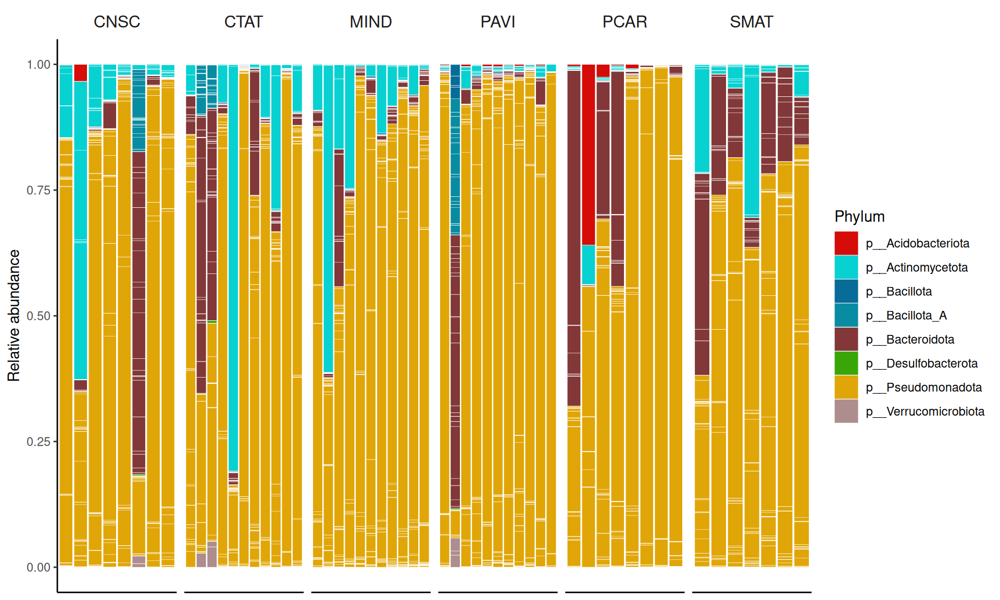
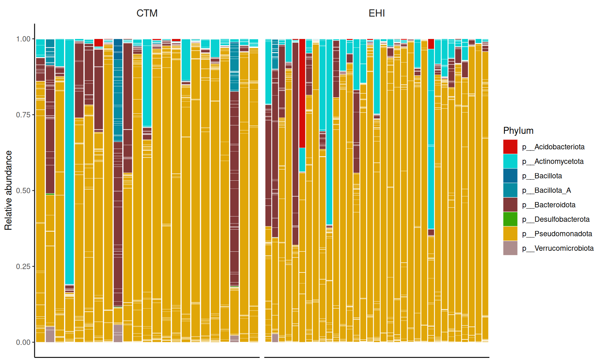
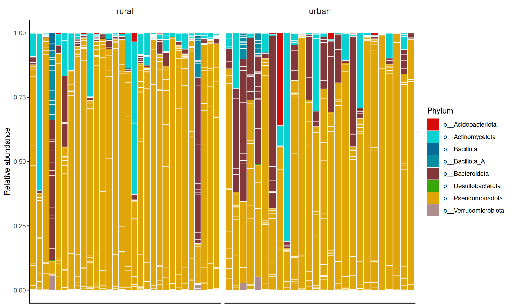
Number of bacteria phyla
[1] 8Bacteria phyla in urban individuals
[1] 8Number of Archaea phyla
[1] 06.2.2 Genus and species annotation
Number of MAGs without species-level annotation
[1] 87| phylum | count_nospecies | count_total | percentage |
|---|---|---|---|
| p__Acidobacteriota | 2 | 2 | 100.00000 |
| p__Actinomycetota | 6 | 8 | 75.00000 |
| p__Bacillota | 5 | 5 | 100.00000 |
| p__Bacillota_A | 20 | 20 | 100.00000 |
| p__Bacteroidota | 35 | 39 | 89.74359 |
| p__Desulfobacterota | 1 | 1 | 100.00000 |
| p__Pseudomonadota | 14 | 39 | 35.89744 |
| p__Verrucomicrobiota | 4 | 4 | 100.00000 |
Percentage of MAGs without species-level annotation
[1] 73.72881Number of MAGs without genera-level annotation
19| phylum | count_nospecies | count_total | percentage |
|---|---|---|---|
| p__Acidobacteriota | 1 | 2 | 50.000000 |
| p__Bacillota | 1 | 5 | 20.000000 |
| p__Bacillota_A | 9 | 20 | 45.000000 |
| p__Bacteroidota | 1 | 39 | 2.564103 |
| p__Desulfobacterota | 1 | 1 | 100.000000 |
| p__Pseudomonadota | 4 | 39 | 10.256410 |
| p__Verrucomicrobiota | 2 | 4 | 50.000000 |
6.3 Taxonomy boxplots
6.3.1 Phylum
phylum_summary <- genome_counts_filt %>%
mutate_at(vars(-genome),~./sum(.)) %>% #apply TSS nornalisation
pivot_longer(-genome, names_to = "sample", values_to = "count") %>%
left_join(sample_metadata, by = join_by(sample == sample)) %>%
left_join(genome_metadata, by = join_by(genome == genome)) %>%
group_by(sample,phylum,event_id,habitat,sol,swab) %>%
#group_by(sample,phylum,event_id,habitat,sol) %>%
summarise(relabun=sum(count))
# add the clr
phylum_summary$clr =
compositions::clr(phylum_summary$relabun)phylum_arrange <- phylum_summary %>%
group_by(phylum) %>%
summarise(mean=mean(clr)) %>%
arrange(-mean) %>%
select(phylum) %>%
pull()
phylum_summary %>%
filter(phylum %in% phylum_arrange) %>%
filter(sample %in% sample_metadata$sample) %>%
mutate(phylum=factor(phylum,levels=rev(phylum_arrange))) %>%
ggplot(aes(x=clr, y=phylum, group=phylum, fill=phylum)) +
scale_fill_manual(values=phylum_colors[rev(phylum_arrange)]) +
geom_boxplot(alpha=0.5) +
theme_minimal() +
theme(legend.position="none") +
labs(y="Phylum",x="Relative abundance")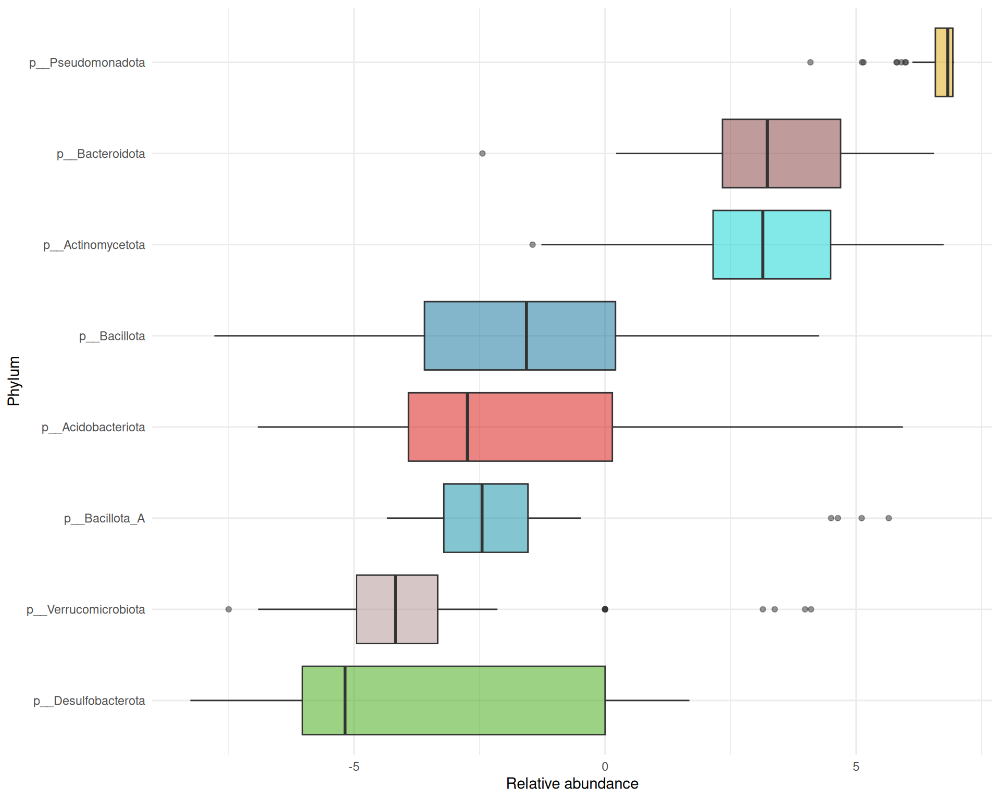
phylum_arrange <- phylum_summary %>%
group_by(phylum) %>%
summarise(mean=sum(clr)) %>%
arrange(-mean) %>%
mutate(phylum = str_remove(phylum,"p__")) %>%
select(phylum) %>%
pull()
phylum_colors2 = phylum_colors
names(phylum_colors2) = str_remove(names(phylum_colors2),"p__")
fig_phylum_relative_abundance =
phylum_summary %>%
left_join(genome_metadata %>% select(phylum,phylum) %>% unique(),by=join_by(phylum==phylum)) %>%
mutate(phylum = str_remove(phylum,"p__")) %>%
filter(phylum %in% phylum_arrange[1:20]) %>%
mutate(phylum=factor(phylum,levels=rev(phylum_arrange[1:20]))) %>%
filter(sample %in% sample_metadata$sample) %>%
ggplot(aes(x=clr, y=phylum,
#group=phylum,
fill=habitat
#colour = habitat
)) +
#scale_fill_manual(values=phylum_colors2) +
scale_fill_manual(name = 'Habitat', values=c("#5bae63","#986eac")) +
geom_boxplot(alpha=0.5, lwd = .5) +
theme_minimal() +
theme(legend.position="top") +
#scale_y_discrete(label = str_remove(phylum_arrange,"p__")) +
labs(y="phylum", x="Relative abundance CLR", color="Phylum")
fig_phylum_relative_abundance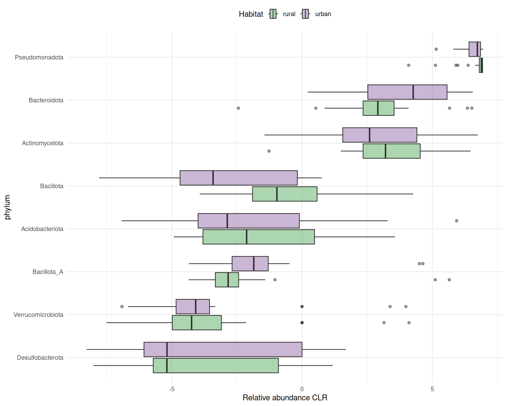
for(q in seq_along(query_variables)[-1]){
print(
phylum_summary %>%
left_join(genome_metadata %>% select(phylum,phylum) %>% unique(),by=join_by(phylum==phylum)) %>%
# left_join(sample_metadata,by=join_by(sample==sample)) %>%
filter(phylum %in% phylum_arrange[1:20]) %>%
mutate(phylum=factor(phylum,levels=rev(phylum_arrange[1:20]))) %>%
filter(sample %in% sample_metadata$sample) %>%
ggplot(aes(x=clr, y=phylum,
group=phylum,
fill=phylum)) +
scale_fill_manual(values=phylum_colors[-8]) +
geom_boxplot(alpha=0.5) +
theme_minimal() +
theme(legend.position="none") +
#facet_grid(.~event_id)+
facet_nested(as.formula(paste("~", query_variables[q])),scales = "free") +
labs(y="phylum", x="Relative abundance (CLR)", color="Phylum")
)
}# relative urban abundance
rel.abund.urban =
phylum_summary %>%
group_by(phylum) %>%
filter(habitat=="urban") %>%
summarise(mean=mean(clr)) %>%
arrange(-mean)
# relative rural abundance
rel.abund.rural =
phylum_summary %>%
group_by(phylum) %>%
filter(habitat=="rural") %>%
summarise(mean=mean(clr)) %>%
arrange(-mean)
# relative toal abundance
rel.abund.total =
phylum_summary %>%
group_by(phylum) %>%
summarise(mean=mean(clr)) %>%
arrange(-mean)
rel.abun.df = merge(rel.abund.urban,rel.abund.rural, by="phylum")
colnames(rel.abun.df) = c("phylum","urban","rural")
rel.abun.df = merge(rel.abun.df,rel.abund.total, by="phylum")
colnames(rel.abun.df) = c("phylum","urban","rural","overall")Use Tukey Honest Significant Differences to create confidence intervals on the differences between the levels (phylum) of factors (habitat, swab).
6.3.1.1 Difference between habitat
phylum_tukey =
TukeyHSD(
aov(clr ~ phylum * habitat,
data =
phylum_summary %>%
left_join(genome_metadata %>% select(phylum,phylum) %>%
unique(),by=join_by(phylum==phylum)) %>%
mutate(phylum = str_remove(phylum,"p__")) %>%
filter(phylum %in% phylum_arrange) %>%
mutate(phylum=factor(phylum,levels=rev(phylum_arrange[1:20]))) %>%
filter(sample %in% sample_metadata$sample)
)
)
phylum_tukey = as.data.frame(phylum_tukey[[3]])
phylum_tukey$j = sub("-.*", "", rownames(phylum_tukey))
phylum_tukey$k = sub(".*-", "", rownames(phylum_tukey))
phylum_tukey$j = gsub(paste(c(":rural",":urban"), collapse = '|'), '', phylum_tukey$j)
phylum_tukey$k = gsub(paste(c(":rural",":urban"), collapse = '|'), '', phylum_tukey$k)
phylum_tukey[
phylum_tukey$j == phylum_tukey$k
, !colnames(phylum_tukey) %in% c("j","k")] diff lwr
Desulfobacterota:urban-Desulfobacterota:rural 0.16492645 -1.8917539
Verrucomicrobiota:urban-Verrucomicrobiota:rural 0.04072969 -2.0159507
Bacillota_A:urban-Bacillota_A:rural 0.71331479 -1.3433656
Acidobacteriota:urban-Acidobacteriota:rural -0.39140521 -2.4480855
Bacillota:urban-Bacillota:rural -2.00731785 -4.0639982
Actinomycetota:urban-Actinomycetota:rural -0.70180069 -2.7584810
Bacteroidota:urban-Bacteroidota:rural 1.10640472 -0.9502756
Pseudomonadota:urban-Pseudomonadota:rural -0.08919391 -2.1458743
upr p adj
Desulfobacterota:urban-Desulfobacterota:rural 2.22160679 1.00000000
Verrucomicrobiota:urban-Verrucomicrobiota:rural 2.09741003 1.00000000
Bacillota_A:urban-Bacillota_A:rural 2.76999513 0.99831444
Acidobacteriota:urban-Acidobacteriota:rural 1.66527514 0.99999919
Bacillota:urban-Bacillota:rural 0.04936249 0.06436303
Actinomycetota:urban-Actinomycetota:rural 1.35487966 0.99859772
Bacteroidota:urban-Bacteroidota:rural 3.16308507 0.89473701
Pseudomonadota:urban-Pseudomonadota:rural 1.96748643 1.00000000phylum_tukey[
phylum_tukey$j == phylum_tukey$k & # when comparing specific taxa between habitat
phylum_tukey$`p adj` < 0.05 # sig
, !colnames(phylum_tukey) %in% c("j","k")][1] diff lwr upr p adj
<0 rows> (or 0-length row.names)6.3.1.2 Difference between swabs
phylum_tukey =
TukeyHSD(
aov(clr ~ phylum * swab,
data =
phylum_summary %>%
left_join(genome_metadata %>% select(phylum,phylum) %>%
unique(),by=join_by(phylum==phylum)) %>%
mutate(phylum = str_remove(phylum,"p__")) %>%
filter(phylum %in% phylum_arrange[1:20]) %>%
mutate(phylum=factor(phylum,levels=rev(phylum_arrange[1:20]))) %>%
filter(sample %in% sample_metadata$sample)
)
)
phylum_tukey = as.data.frame(phylum_tukey[[3]])
phylum_tukey$j = sub("-.*", "", rownames(phylum_tukey))
phylum_tukey$k = sub(".*-", "", rownames(phylum_tukey))
phylum_tukey$j = gsub(paste(c(":EHI",":CTM"), collapse = '|'), '', phylum_tukey$j)
phylum_tukey$k = gsub(paste(c(":EHI",":CTM"), collapse = '|'), '', phylum_tukey$k)
phylum_tukey[
phylum_tukey$j == phylum_tukey$k & # when comparing specific taxa between habitat
phylum_tukey$`p adj` < 0.05 # sig
, !colnames(phylum_tukey) %in% c("j","k")][1] diff lwr upr p adj
<0 rows> (or 0-length row.names)Significant differences in p__Desulfobacterota between swab types. However, this is the contaminant with the lowest detection.
6.3.2 Class
class_summary <- genome_counts_filt %>%
mutate_at(vars(-genome),~./sum(.)) %>% #apply TSS nornalisation
pivot_longer(-genome, names_to = "sample", values_to = "count") %>% #reduce to minimum number of columns
left_join(sample_metadata, by = join_by(sample == sample)) %>% #append sample metadata
left_join(., genome_metadata, by = join_by(genome == genome)) %>% #append genome metadata
group_by(sample,class,event_id,habitat) %>%
summarise(relabun=sum(count))
# add the clr
class_summary$clr =
compositions::clr(class_summary$relabun)class_arrange <- class_summary %>%
group_by(class) %>%
summarise(mean=sum(clr)) %>%
arrange(-mean) %>%
select(class) %>%
pull()
class_summary %>%
left_join(genome_metadata %>% select(class,phylum) %>% unique(),by=join_by(class==class)) %>%
filter(class %in% class_arrange[1:20]) %>%
mutate(class=factor(class,levels=rev(class_arrange[1:20]))) %>%
filter(sample %in% sample_metadata$sample) %>%
ggplot(aes(x=clr, y=class,
fill=habitat,
colour = phylum)) +
scale_colour_manual(values=phylum_colors) +
scale_fill_manual(values=c("#5bae63","#986eac")) +
geom_boxplot(alpha=0.5, lwd = 1) +
theme_minimal() +
#theme(legend.position="none") +
labs(y="class", x="Relative abundance CLR", color="Habitat")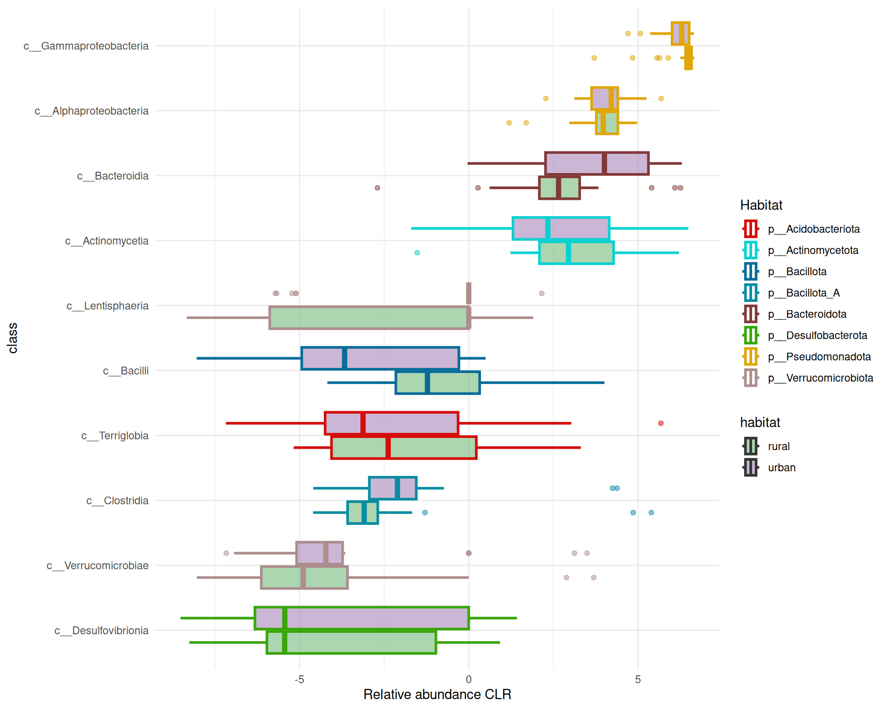
class_tukey =
TukeyHSD(
aov(clr ~ class * habitat,
data =
class_summary %>%
left_join(genome_metadata %>% select(class,class) %>% unique(),by=join_by(class==class)) %>%
filter(class %in% class_arrange[1:20]) %>%
mutate(class=factor(class,levels=rev(class_arrange[1:20]))) %>%
filter(sample %in% sample_metadata$sample)
)
)
class_tukey = as.data.frame(class_tukey[[3]])
class_tukey$j = sub("-.*", "", rownames(class_tukey))
class_tukey$k = sub(".*-", "", rownames(class_tukey))
class_tukey$j = gsub(paste(c(":rural",":urban"), collapse = '|'), '', class_tukey$j)
class_tukey$k = gsub(paste(c(":rural",":urban"), collapse = '|'), '', class_tukey$k)
class_tukey[
class_tukey$j == class_tukey$k & # when comparing specific taxa between habitat
class_tukey$`p adj` < 0.05 # sig
, !colnames(class_tukey) %in% c("j","k")][1] diff lwr upr p adj
<0 rows> (or 0-length row.names)Significant difference in proportion of classes c__Bacilli between habitats.
6.3.3 Family
family_summary <- genome_counts_filt %>%
mutate_at(vars(-genome),~./sum(.)) %>% #apply TSS nornalisation
pivot_longer(-genome, names_to = "sample", values_to = "count") %>% #reduce to minimum number of columns
left_join(sample_metadata, by = join_by(sample == sample)) %>% #append sample metadata
left_join(., genome_metadata, by = join_by(genome == genome)) %>% #append genome metadata
group_by(sample,family,event_id,habitat) %>%
summarise(relabun=sum(count))
# add the clr
family_summary$clr =
compositions::clr(family_summary$relabun)family_arrange <- family_summary %>%
group_by(family) %>%
summarise(mean=sum(clr)) %>%
arrange(-mean) %>%
select(family) %>%
pull()
family_summary %>%
left_join(genome_metadata %>% select(family,phylum) %>% unique(),by=join_by(family==family)) %>%
filter(family %in% family_arrange[1:12]) %>%
mutate(family=factor(family,levels=rev(family_arrange[1:20]))) %>%
filter(sample %in% sample_metadata$sample) %>%
ggplot(aes(x=clr, y=family,
fill=phylum,
colour = habitat)) +
scale_fill_manual(values=phylum_colors[-8]) +
scale_color_manual(values=c("#5bae63","#986eac")) +
geom_boxplot(alpha=0.5) +
theme_minimal() +
#theme(legend.position="none") +
labs(y="family", x="Relative abundance CLR", color="Habitat")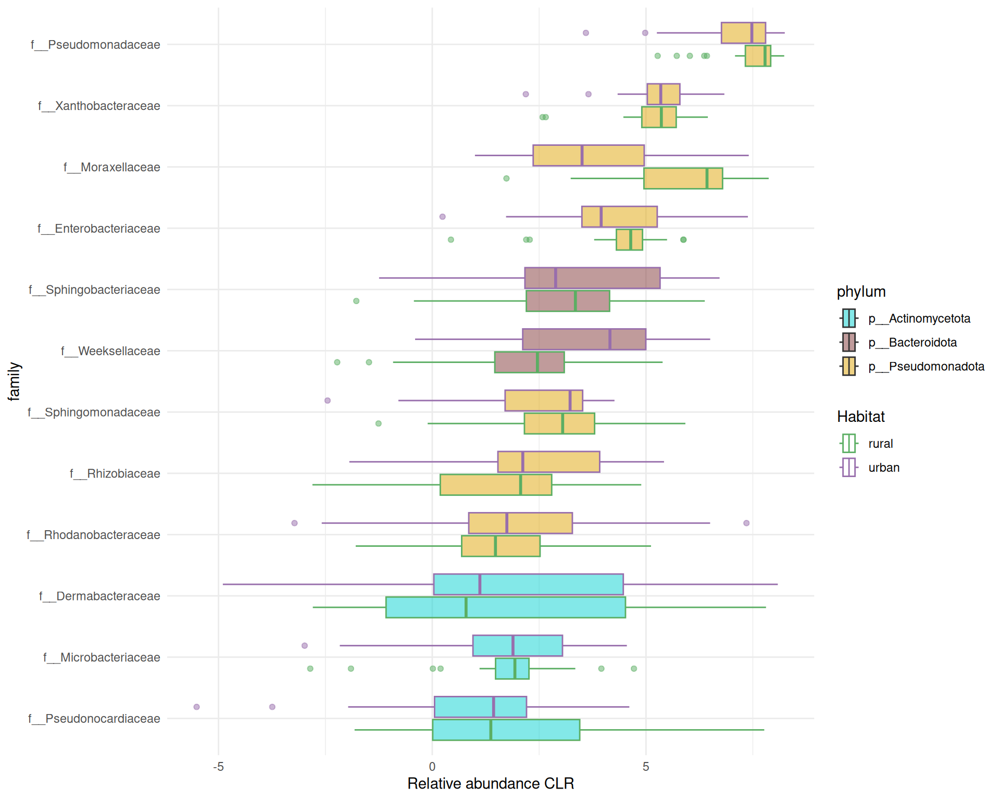
family_tukey =
TukeyHSD(
aov(clr ~ family * habitat,
data =
family_summary %>%
left_join(genome_metadata %>% select(family,family) %>% unique(),by=join_by(family==family)) %>%
filter(family %in% family_arrange[1:20]) %>%
mutate(family=factor(family,levels=rev(family_arrange[1:20]))) %>%
filter(sample %in% sample_metadata$sample)
)
)
family_tukey = as.data.frame(family_tukey[[3]])
family_tukey$j = sub("-.*", "", rownames(family_tukey))
family_tukey$k = sub(".*-", "", rownames(family_tukey))
family_tukey$j = gsub(paste(c(":rural",":urban"), collapse = '|'), '', family_tukey$j)
family_tukey$k = gsub(paste(c(":rural",":urban"), collapse = '|'), '', family_tukey$k)
family_tukey[
family_tukey$j == family_tukey$k & # when comparing specific taxa between habitat
family_tukey$`p adj` < 0.05 # sig
, !colnames(family_tukey) %in% c("j","k")] diff lwr upr
f__2013Ark19i:urban-f__2013Ark19i:rural -2.474087 -4.614648 -0.3335265
p adj
f__2013Ark19i:urban-f__2013Ark19i:rural 0.004651481f__Moraxellaceae and f__2013Ark19i are significantly different Family between habitats.
6.3.4 Genus
genus_summary <- genome_counts_filt %>%
mutate_at(vars(-genome),~./sum(.)) %>% #apply TSS nornalisation
pivot_longer(-genome, names_to = "sample", values_to = "count") %>% #reduce to minimum number of columns
left_join(sample_metadata, by = join_by(sample == sample)) %>% #append sample metadata
left_join(., genome_metadata, by = join_by(genome == genome)) %>% #append genome metadata
group_by(sample,genus,event_id,habitat) %>%
summarise(relabun=sum(count))
# add the clr
genus_summary$clr =
compositions::clr(genus_summary$relabun)
genus_arrange <- genus_summary %>%
group_by(genus) %>%
summarise(mean=sum(clr)) %>%
arrange(-mean) %>%
select(genus) %>%
pull()
genus_summary %>%
left_join(genome_metadata %>% select(genus,phylum) %>% unique(),by=join_by(genus==genus)) %>%
filter(genus %in% genus_arrange[1:20]) %>%
mutate(genus=factor(genus,levels=rev(genus_arrange[1:20]))) %>%
filter(sample %in% sample_metadata$sample) %>%
ggplot(aes(x=clr, y=genus,
fill=phylum,
colour = habitat)) +
scale_fill_manual(values=phylum_colors[-8]) +
scale_color_manual(values=c("#5bae63","#986eac")) +
geom_boxplot(alpha=0.5) +
theme_minimal() +
#theme(legend.position="none") +
labs(y="genus", x="Relative abundance CLR", color="Habitat")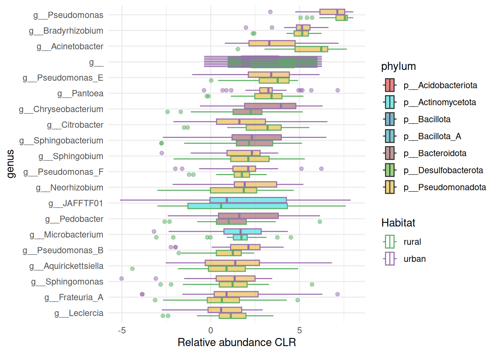
6.4 Enrichment analysis: Ancombc2
Analysis of Compositions of Microbiomes with Bias Correction 2 (ANCOM-BC2) is a methodology for performing differential abundance (DA) analysis of microbiome count data. It estimates and corrects both the sample-specific (sampling fraction) as well as taxon-specific (sequencing efficiency) biases.
The primary output of the ANCOM-BC2 methodology identifies taxa with differential abundance based on the chosen covariate. The results include: 1) log fold changes, 2) standard errors, 3) test statistics, 4) p-values, 5) adjusted p-values, 6) indicators denoting whether the taxon is differentially abundant (TRUE) or not (FALSE), and 7) indicators denoting whether the taxon passed the sensitivity analysis (TRUE) or not (FALSE).
6.4.0.2 MAG level
res_perm =
ancom_rand_output_mag_habitat$res %>%
dplyr::transmute(taxon = taxon,
p = p_habitaturban,
ss_pass = passed_ss_habitaturban) %>%
rowwise() %>%
mutate(
p_update = case_when(
# For taxa with significant p-values that failed the sensitivity analysis,
# we assign a random value uniformly drawn from the range [0.05, 1].
p < 0.05 & ss_pass == FALSE ~ runif(1, min = 0.05, max = 1),
TRUE ~ p
)) %>%
ungroup()
df_p = res_perm %>%
dplyr::select(p, p_update) %>%
pivot_longer(cols = p:p_update, names_to = "type", values_to = "value")
df_p$type = recode(df_p$type,
`p` = "ANCOM-BC2 (Without Sensitivity Analysis)",
`p_update` = "ANCOM-BC2 (With Sensitivity Analysis)")
num_bins = 30
fig_p = df_p %>%
ggplot(aes(x = value, fill = type)) +
geom_histogram(position = "identity", alpha = 0.5, bins = num_bins) +
geom_hline(yintercept = length(ancom_rand_output_mag_habitat$ss_tab$taxon)/
num_bins, linetype = "dashed") +
theme_minimal() +
labs(title = "Distribution of P-values",
x = "P-value",
y = "Frequency",
fill = NULL,
color = NULL) +
theme_bw() +
theme(plot.title = element_text(hjust = 0.5),
panel.grid.minor.y = element_blank(),
legend.position = "bottom")
fig_p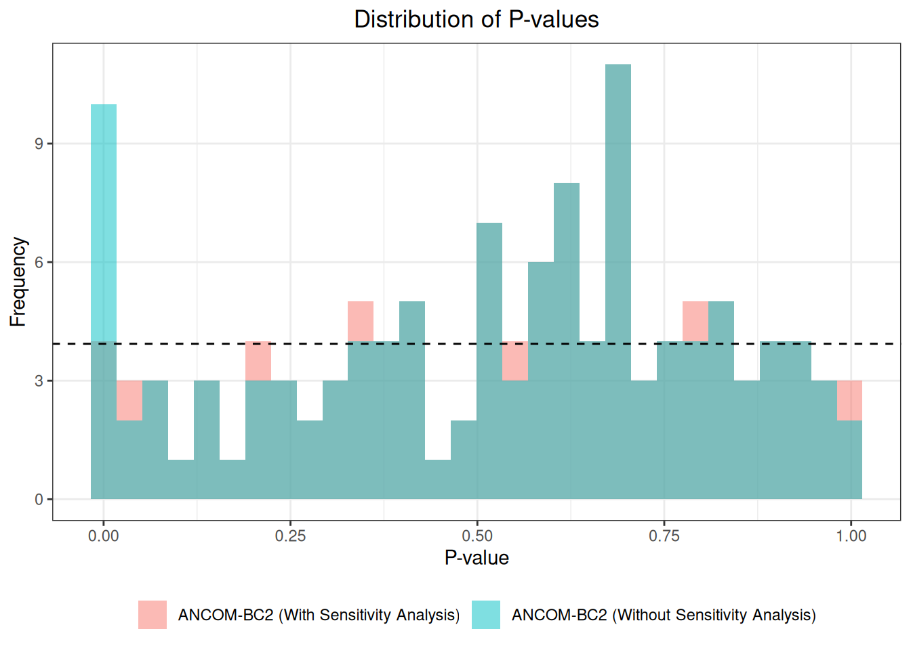
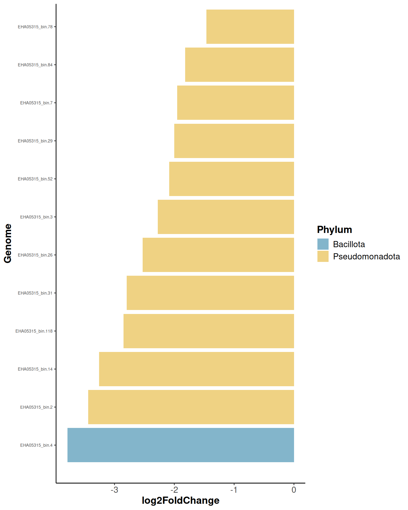
A fold change describes the ratio of two values (not the difference). The log2 fold changes are the log-of-the-fold-changes, and are used/plotted in graphs as those are nicer to show because they center around 0, giving reductions a negative value and increments a positive value. Changes can be interpreted thus, if there is a two fold increase (fold change=2, Log2FC=1) between A and B, then A is twice as big as B (or A is 200% of B). If there is a two fold decrease (fold change = 0.5, Log2FC= -1) between A and B, then A is half as big as B (or B is twice as big as A, or A is 50% of B). – Ian Sudbery 2018res_prim = ancom_rand_output_mag_habitat$res
df_habitaturban = res_prim %>%
dplyr::select(taxon, ends_with("habitaturban"))
df_fig_habitaturban = df_habitaturban %>%
dplyr::filter(diff_habitaturban == 1) %>%
dplyr::arrange(desc(lfc_habitaturban)) %>%
dplyr::mutate(direct = ifelse(lfc_habitaturban > 0, "Positive LFC", "Negative LFC"),
color = ifelse(diff_robust_habitaturban, "aquamarine3", "black"))
df_fig_habitaturban$taxon = factor(df_fig_habitaturban$taxon, levels = df_fig_habitaturban$taxon)
df_fig_habitaturban$direct = factor(df_fig_habitaturban$direct,
levels = c("Positive LFC", "Negative LFC"))
fig_habitaturban = df_fig_habitaturban %>%
ggplot(aes(x = taxon, y = lfc_habitaturban, fill = direct)) +
geom_bar(stat = "identity", width = 0.7, color = "black",
position = position_dodge(width = 0.4)) +
geom_errorbar(aes(ymin = lfc_habitaturban - se_habitaturban, ymax =
lfc_habitaturban + se_habitaturban),
width = 0.2, position = position_dodge(0.05), color = "black") +
labs(x = NULL, y = "Log fold change",
title = "Log fold changes between habitat") +
scale_fill_discrete(name = NULL) +
scale_color_discrete(name = NULL) +
theme_bw() +
theme(plot.title = element_text(hjust = 0.5),
panel.grid.minor.y = element_blank(),
axis.text.x = element_text(angle = 60, hjust = 1,
color = df_fig_habitaturban$color))
fig_habitaturban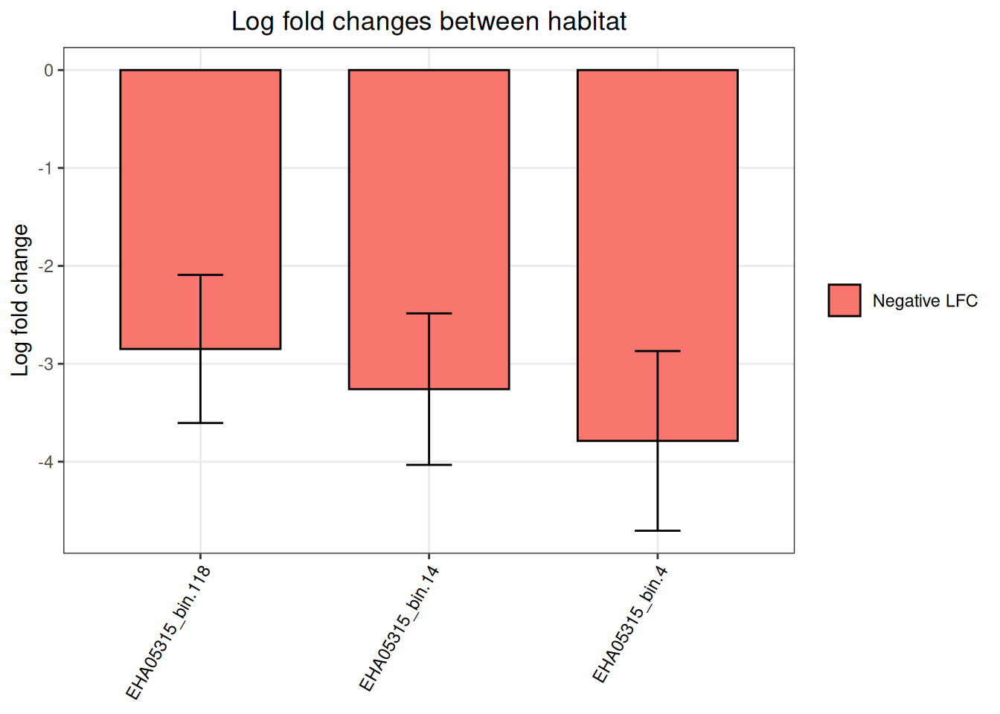
Any taxon highlighted in green indicates its successful passage through the sensitivity analysis (diff_robust is TRUE) for pseudo-count addition. In this case the only value was Pseudomonadota Gammaproteobacteria Pseudomonadales Moraxellaceae Acinetobacter johnsonii (EHA05315_bin.31).This species of Acinetobacter is known for its denitrification capacity and in some cases as a pathogen in humans. It was identified as pathogenic among a bullfrog species in southern China that emerges in low temperature conditions [Lin, et al. 2025]. A. johnsonii used as an environmental probiotic in aquaculture for ammonia removal, pyrene degradation, sulfide degradation, and malathion biodegradation (Jiang et al., 2012, Jiang et al., 2018).
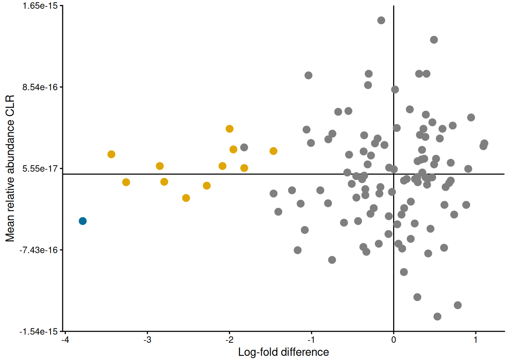
CLR transformation removes the constant-sum constraint that means relative abundances must always equal 1, centring the values around zero. A CLR = 0 suggest the relative abundance is equal to the mean of all components, while positive CLR > 0 is more abundant than the geometric mean, and CLR < 0 is less than the geometric mean.
6.4.0.3 Variable taxonomic scales
set.seed(1234) #set seed for reproducibility
ancom_rand_output_scale = list()
res_perm_scale = list()
df_p_scale = list()
ancombc_rand_table_scale = list()
taxonomic_scales = c("phylum", "class", "order", "family", "genus")
taxonomy <- data.frame(physeq_sample@tax_table) %>%
rownames_to_column(., "taxon") %>%
mutate_at(vars(phylum, class, order, family, genus, species), ~ str_replace(., "[dpcofgs]__", ""))
for (i in seq_along(taxonomic_scales)){
ancom_rand_output_scale[[i]] = ancombc2(data = physeq_sample,
assay_name = "counts",
tax_level = taxonomic_scales[i], #change to agglomerate analysis to a higher taxonomic range
fix_formula = "habitat", #fixed variable(s)
# rand_formula = "(1|individual)",
p_adj_method = "holm",
pseudo_sens = TRUE, # TRUE significantly reduces the number of significant p-values
prv_cut =0,
lib_cut = 0,
s0_perc = 0.05,
group = NULL,
struc_zero = FALSE,
neg_lb = FALSE,
alpha = 0.05,
n_cl = 2,
verbose = TRUE,
global = FALSE,
pairwise = FALSE,
dunnet = FALSE,
trend = FALSE,
iter_control = list(tol = 1e-5, max_iter = 20, verbose = FALSE),
em_control = list(tol = 1e-5, max_iter = 100),
# lme_control = lme4::lmerControl(),
mdfdr_control = list(fwer_ctrl_method = "holm", B = 100),
trend_control = NULL)
res_perm_scale[[i]] =
ancom_rand_output_scale[[i]]$res %>%
dplyr::transmute(taxon = taxon,
p = p_habitaturban,
ss_pass = passed_ss_habitaturban) %>%
rowwise() %>%
mutate(
p_update = case_when(
# For taxa with significant p-values that failed the sensitivity analysis,
# we assign a random value uniformly drawn from the range [0.05, 1].
p < 0.05 & ss_pass == FALSE ~ runif(1, min = 0.05, max = 1),
TRUE ~ p
)) %>%
ungroup()
df_p_scale[[i]] = res_perm_scale[[i]] %>%
dplyr::select(p, p_update) %>%
pivot_longer(cols = p:p_update, names_to = "type", values_to = "value")
df_p$type = recode(df_p$type,
`p` = "ANCOM-BC2 (Without Sensitivity Analysis)",
`p_update` = "ANCOM-BC2 (With Sensitivity Analysis)")
ancombc_rand_table_scale[[i]] <- ancom_rand_output_scale[[i]]$res %>%
dplyr::select(taxon, lfc_habitaturban, p_habitaturban) %>%
filter(p_habitaturban < 0.05) %>%
dplyr::arrange(p_habitaturban) %>%
left_join(taxonomy, by = join_by(taxon == taxon)) %>%
mutate_at(vars(phylum, species), ~ str_replace(., "[dpcofgs]__", ""))%>%
dplyr::arrange(lfc_habitaturban)
}Checking the input data type ...The input data is of type: phyloseqPASSChecking the sample metadata ...The specified variables in the formula: habitatThe available variables in the sample metadata: event_id, sample_code, species, region, sample_type.x, order, sex, country, latitude, longitude, singlem_fraction, reads_post_fastp, host_reads, reads_lost_fastp_percent, metagenomic_bases, host_bases, bases_lost_fastp_percent, diversity, C, id, animal_id, sample_type.y, sample_origin, freshness, freeze_time, note, swab, sol, habitat, X_IMDmeanPASSChecking other arguments ...PASSObtaining initial estimates ...Estimating sample-specific biases ...ANCOM-BC2 primary results ...Conducting sensitivity analysis for pseudo-count addition to 0s ...
For taxa that are significant but do not pass the sensitivity analysis,
they are marked in the 'passed_ss' column and will be treated as non-significant in the 'diff_robust' column.
For detailed instructions on performing sensitivity analysis, please refer to the package vignette.Checking the input data type ...The input data is of type: phyloseqPASSChecking the sample metadata ...The specified variables in the formula: habitatThe available variables in the sample metadata: event_id, sample_code, species, region, sample_type.x, order, sex, country, latitude, longitude, singlem_fraction, reads_post_fastp, host_reads, reads_lost_fastp_percent, metagenomic_bases, host_bases, bases_lost_fastp_percent, diversity, C, id, animal_id, sample_type.y, sample_origin, freshness, freeze_time, note, swab, sol, habitat, X_IMDmeanPASSChecking other arguments ...PASSObtaining initial estimates ...Estimating sample-specific biases ...ANCOM-BC2 primary results ...Conducting sensitivity analysis for pseudo-count addition to 0s ...
For taxa that are significant but do not pass the sensitivity analysis,
they are marked in the 'passed_ss' column and will be treated as non-significant in the 'diff_robust' column.
For detailed instructions on performing sensitivity analysis, please refer to the package vignette.Checking the input data type ...The input data is of type: phyloseqPASSChecking the sample metadata ...The specified variables in the formula: habitatThe available variables in the sample metadata: event_id, sample_code, species, region, sample_type.x, order, sex, country, latitude, longitude, singlem_fraction, reads_post_fastp, host_reads, reads_lost_fastp_percent, metagenomic_bases, host_bases, bases_lost_fastp_percent, diversity, C, id, animal_id, sample_type.y, sample_origin, freshness, freeze_time, note, swab, sol, habitat, X_IMDmeanPASSChecking other arguments ...PASSObtaining initial estimates ...Estimating sample-specific biases ...ANCOM-BC2 primary results ...Conducting sensitivity analysis for pseudo-count addition to 0s ...
For taxa that are significant but do not pass the sensitivity analysis,
they are marked in the 'passed_ss' column and will be treated as non-significant in the 'diff_robust' column.
For detailed instructions on performing sensitivity analysis, please refer to the package vignette.Checking the input data type ...The input data is of type: phyloseqPASSChecking the sample metadata ...The specified variables in the formula: habitatThe available variables in the sample metadata: event_id, sample_code, species, region, sample_type.x, order, sex, country, latitude, longitude, singlem_fraction, reads_post_fastp, host_reads, reads_lost_fastp_percent, metagenomic_bases, host_bases, bases_lost_fastp_percent, diversity, C, id, animal_id, sample_type.y, sample_origin, freshness, freeze_time, note, swab, sol, habitat, X_IMDmeanPASSChecking other arguments ...PASSObtaining initial estimates ...Estimating sample-specific biases ...ANCOM-BC2 primary results ...Conducting sensitivity analysis for pseudo-count addition to 0s ...
For taxa that are significant but do not pass the sensitivity analysis,
they are marked in the 'passed_ss' column and will be treated as non-significant in the 'diff_robust' column.
For detailed instructions on performing sensitivity analysis, please refer to the package vignette.Checking the input data type ...The input data is of type: phyloseqPASSChecking the sample metadata ...The specified variables in the formula: habitatThe available variables in the sample metadata: event_id, sample_code, species, region, sample_type.x, order, sex, country, latitude, longitude, singlem_fraction, reads_post_fastp, host_reads, reads_lost_fastp_percent, metagenomic_bases, host_bases, bases_lost_fastp_percent, diversity, C, id, animal_id, sample_type.y, sample_origin, freshness, freeze_time, note, swab, sol, habitat, X_IMDmeanPASSChecking other arguments ...PASSObtaining initial estimates ...Estimating sample-specific biases ...ANCOM-BC2 primary results ...Conducting sensitivity analysis for pseudo-count addition to 0s ...
For taxa that are significant but do not pass the sensitivity analysis,
they are marked in the 'passed_ss' column and will be treated as non-significant in the 'diff_robust' column.
For detailed instructions on performing sensitivity analysis, please refer to the package vignette.[[1]]
taxon lfc_habitaturban p_habitaturban domain phylum class order family
1 p__Bacillota -2.709096 0.000140761 <NA> <NA> <NA> <NA> <NA>
genus species genome
1 <NA> <NA> <NA>
[[2]]
taxon lfc_habitaturban p_habitaturban domain phylum class order family
1 c__Bacilli -2.709096 0.0001404963 <NA> <NA> <NA> <NA> <NA>
genus species genome
1 <NA> <NA> <NA>
[[3]]
taxon lfc_habitaturban p_habitaturban domain phylum class order
1 o__Mycoplasmatales -3.787602 0.0001007064 <NA> <NA> <NA> <NA>
family genus species genome
1 <NA> <NA> <NA> <NA>
[[4]]
taxon lfc_habitaturban p_habitaturban domain phylum class
1 f__Mycoplasmoidaceae -3.787602 0.0001073288 <NA> <NA> <NA>
2 f__2013Ark19i -3.438308 0.0014443749 <NA> <NA> <NA>
3 f__Moraxellaceae -2.378599 0.0017317216 <NA> <NA> <NA>
order family genus species genome
1 <NA> <NA> <NA> <NA> <NA>
2 <NA> <NA> <NA> <NA> <NA>
3 <NA> <NA> <NA> <NA> <NA>
[[5]]
taxon
1 g__Mycoplasma_N
2 d__Bacteria_p__Pseudomonadota_c__Gammaproteobacteria_o__Burkholderiales_f__2013Ark19i_g__
3 g__Acinetobacter
4 g__Citrobacter
lfc_habitaturban p_habitaturban domain phylum class order family genus
1 -3.787602 0.0001139942 <NA> <NA> <NA> <NA> <NA> <NA>
2 -3.438308 0.0014945843 <NA> <NA> <NA> <NA> <NA> <NA>
3 -2.378599 0.0018508239 <NA> <NA> <NA> <NA> <NA> <NA>
4 -1.560340 0.0276515339 <NA> <NA> <NA> <NA> <NA> <NA>
species genome
1 <NA> <NA>
2 <NA> <NA>
3 <NA> <NA>
4 <NA> <NA>6.5 Outputs
saveRDS(
merge(rel.abun.df,
ancom_rand_output_scale$phylum$res[,c("taxon","p_habitaturban")],
by.x = "phylum", by.y = "taxon") %>%
mutate(phylum = str_remove(phylum,"p__")) %>%
`colnames<-`(c("Phylum", "Urban", "Rural", "Overall","p")) %>%
mutate(across(where(is.numeric), signif, 3)) %>%
arrange(-Overall),
"figure/table_relative_abundance.RDS")saveRDS(
ancombc_rand_table_mag[,c("phylum","class","order","family","genus","species","genome",
"lfc_habitaturban", "p_habitaturban")] %>%
mutate(across(where(is.numeric), signif, 2)) %>%
`colnames<-`(c("Phylum","Class","Order","Family","Genus","Species","MAG",
"LFC", "p")),
"figure/table_lfc.RDS")grid.arrange(grobs =
list(fig_phylum_relative_abundance,
fig_ancomb_relative_abundance),
layout_matrix = rbind(c(1,1,1,1,1,1,1,1,2,2,2,2),
c(1,1,1,1,1,1,1,1,2,2,2,2),
c(1,1,1,1,1,1,1,1,2,2,2,2),
c(1,1,1,1,1,1,1,1,2,2,2,2),
c(1,1,1,1,1,1,1,1,2,2,2,2),
c(1,1,1,1,1,1,1,1,2,2,2,2),
c(1,1,1,1,1,1,1,1,2,2,2,2),
c(1,1,1,1,1,1,1,1,2,2,2,2),
c(1,1,1,1,1,1,1,1,2,2,2,2),
c(1,1,1,1,1,1,1,1,2,2,2,2)
))Ignoring unknown labels:
• colour : "Phylum"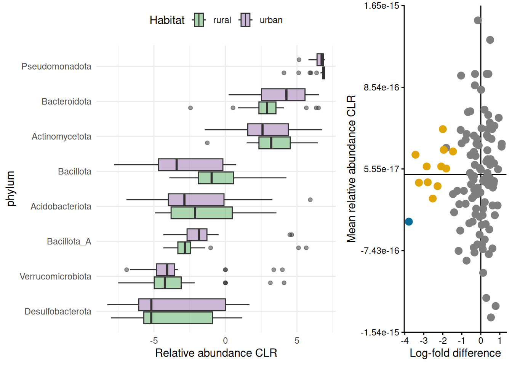
grid.arrange(grobs =
list(fig_phylum_relative_abundance,
fig_ancomb_relative_abundance),
layout_matrix = rbind(c(1,1,1,1,1,1,1,1,1,1,1,1),
c(1,1,1,1,1,1,1,1,1,1,1,1),
c(1,1,1,1,1,1,1,1,1,1,1,1),
c(1,1,1,1,1,1,1,1,1,1,1,1),
c(1,1,1,1,1,1,1,1,1,1,1,1),
c(1,1,1,1,1,1,1,1,1,1,1,1),
c(1,1,1,1,1,1,1,1,1,1,1,1),
c(2,2,2,2,2,2,2,2,2,2,2,2),
c(2,2,2,2,2,2,2,2,2,2,2,2),
c(2,2,2,2,2,2,2,2,2,2,2,2),
c(2,2,2,2,2,2,2,2,2,2,2,2)
)) Ignoring unknown labels:
• colour : "Phylum"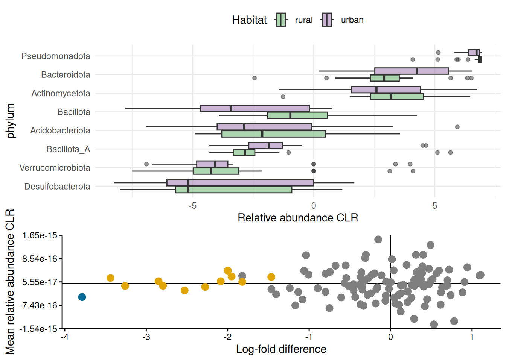
ggarrange(fig_phylum_relative_abundance,
fig_ancomb_relative_abundance,
ncol=1, nrow=2,
labels = c("A", "B")
) -> figIgnoring unknown labels:
• colour : "Phylum"6.6 Geolocation Correlations
# Join geolocation with taxa abundance
geo_comp =
merge(
sample_metadata[,c("sample","event_id","latitude","longitude")],
t(ancom_rand_output_mag_habitat$bias_correct_log_table),
by.x = "sample",by.y = "row.names"
)
# join latitude and longitude as a single value
geo_comp$pc1 = prcomp(sample_metadata[,c("latitude","longitude")])$x[,1]
# taxa names
taxa_ls = colnames(t(ancom_rand_output_mag_habitat$bias_correct_log_table))
# anova outputs
taxa_geo_corr = list()
# compiled p values
df_sig_geo_corr = matrix(nrow = 2,
ncol = length(taxa_ls))
for (i in seq_along(taxa_ls)){
# save F value and P vlaue
taxa_geo_corr[[i]] =
anova(
#lm(reformulate(c("latitude", "longitude"), response = taxa_ls[i]),
lm(reformulate(c("pc1"), response = taxa_ls[i]),
data = geo_comp))[,c(4:5)]
# condense to table with p value
df_sig_geo_corr[,i] =
anova(
#lm(reformulate(c("latitude", "longitude"), response = taxa_ls[i]),
lm(reformulate(c("pc1"), response = taxa_ls[i]),
data = geo_comp))[1:2,5]
}
# apply column, row, and list names
names(taxa_geo_corr) = taxa_ls
rownames(df_sig_geo_corr) = c("latitude","longitude")
colnames(df_sig_geo_corr) = taxa_ls
# taxa that correlate with longitude
df_sig_geo_corr %>%
as.tibble() %>%
select(where(~ is.numeric(.x) && any(.x < 0.05, na.rm = TRUE))) %>%
names()Warning: `as.tibble()` was deprecated in tibble 2.0.0.
ℹ Please use `as_tibble()` instead.
ℹ The signature and semantics have changed, see `?as_tibble`.
This warning is displayed once per session.
Call `lifecycle::last_lifecycle_warnings()` to see where this
warning was generated.[1] "EHA05315_bin.103" "EHA05315_bin.18" "EHA05315_bin.1" "EHA05315_bin.22"
[5] "EHA05315_bin.30" "EHA05315_bin.47" "EHA05315_bin.48" "EHA05315_bin.92" Identified a list of taxa where the taxa abundance correlates with either latitutde or longitude. However, when using PC1 as a composite value for both latitude and longitude, there are fewer (4) significant correlations.
6.7 Update metadata
genome_metadata =
readRDS("data/supp_genome_metadata1.Rds")
# mean CLR of each MAG within a habitat
urban_clr =
compositions::clr(genome_counts_filt[,-1]) %>%
as.data.frame() %>%
select(sample_metadata3[sample_metadata3$habitat == "urban","sample"]) %>%
mutate(urban_clr = rowMeans(across(where(is.numeric))),
genome = genome_counts_filt$genome) %>%
select(genome,urban_clr)
rural_clr =
compositions::clr(genome_counts_filt[,-1]) %>%
as.data.frame() %>%
select(sample_metadata3[sample_metadata3$habitat == "rural","sample"]) %>%
mutate(rural_clr = rowMeans(across(where(is.numeric))),
genome = genome_counts_filt$genome) %>%
select(genome,rural_clr)
genome_metadata =
merge(
genome_metadata,
merge(urban_clr,rural_clr)
)
saveRDS(genome_metadata,
"data/supp_genome_metadata2.Rds")